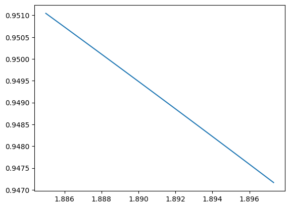

import torch
import torch.nn as nn
import torch.optim as optim
from torch.utils.data import DataLoader, TensorDataset
import numpy as np
import matplotlib.pyplot as plt—author: Nipun Batrabadges: truecategories:- ML- attention-mechanism- sequence-to-sequence- deep-learning- neural-networks- transformers- nlp- pytorchdate: ’2024-05-30’title: Attention in Sequence to Sequencetoc: true—
class Attention(nn.Module):
def __init__(self, input_dim):
super(Attention, self).__init__()
self.attention = nn.Sequential(
nn.Linear(input_dim, input_dim),
nn.Tanh(),
nn.Linear(input_dim, 1)
)
def forward(self, x):
attn_weights = self.attention(x) # Shape: (batch_size, seq_len, 1)
attn_weights = torch.softmax(attn_weights, dim=1) # Shape: (batch_size, seq_len, 1)
context = torch.sum(attn_weights * x, dim=1) # Shape: (batch_size, input_dim)
return context, attn_weightsclass CNNWithAttention(nn.Module):
def __init__(self, input_channels, output_size, conv_filters, kernel_size, attention_dim):
super(CNNWithAttention, self).__init__()
self.conv1 = nn.Conv1d(input_channels, conv_filters, kernel_size)
self.relu = nn.ReLU()
self.attention = Attention(conv_filters)
self.fc = nn.Linear(conv_filters, output_size)
def forward(self, x):
# Input shape: (batch_size, input_channels, seq_len)
x = self.conv1(x) # Shape: (batch_size, conv_filters, seq_len)
x = self.relu(x)
x = x.permute(0, 2, 1) # Shape: (batch_size, seq_len, conv_filters)
context, attn_weights = self.attention(x) # Shape: (batch_size, conv_filters)
output = self.fc(context) # Shape: (batch_size, output_size)
return output, attn_weightsdef generate_sine_wave(seq_len, num_samples):
X = np.linspace(0, 4 * np.pi, seq_len * num_samples)
y = np.sin(X)
X = X.reshape(num_samples, seq_len)
y = y.reshape(num_samples, seq_len)
return X, y
seq_len = 50
num_samples = 1000
X, y = generate_sine_wave(seq_len, num_samples)plt.plot(X[150], y[150])
# Prepare data for 1 time step ahead forecasting
train_X = np.array([y[i, :-1] for i in range(num_samples)]).reshape(num_samples, 1, seq_len-1)
train_y = np.array([y[i, 1:] for i in range(num_samples)]).reshape(num_samples, seq_len-1)
# Convert to PyTorch tensors
train_X = torch.tensor(train_X, dtype=torch.float32)
train_y = torch.tensor(train_y[:, :, None], dtype=torch.float32) # Shape: (num_samples, seq_len-1, 1)
train_dataset = TensorDataset(train_X, train_y)
train_loader = DataLoader(train_dataset, batch_size=32, shuffle=True)def train_model(model, train_loader, criterion, optimizer, num_epochs):
model.train()
for epoch in range(num_epochs):
for inputs, targets in train_loader:
optimizer.zero_grad()
outputs, attn_weights = model(inputs)
loss = criterion(outputs, targets)
loss.backward()
optimizer.step()
print(f"Epoch {epoch+1}/{num_epochs}, Loss: {loss.item()}")
# Initialize model, loss function, and optimizer
input_channels = 1
output_size = 1
conv_filters = 64
kernel_size = 3
attention_dim = 64
num_epochs = 10model = CNNWithAttention(input_channels, output_size, conv_filters, kernel_size, attention_dim)
criterion = nn.MSELoss()
optimizer = optim.Adam(model.parameters(), lr=0.001)
# Train the model
train_model(model, train_loader, criterion, optimizer, num_epochs)/home/nipun.batra/miniconda3/envs/ml/lib/python3.11/site-packages/torch/nn/modules/loss.py:535: UserWarning: Using a target size (torch.Size([32, 49, 1])) that is different to the input size (torch.Size([32, 1])). This will likely lead to incorrect results due to broadcasting. Please ensure they have the same size.
return F.mse_loss(input, target, reduction=self.reduction)--------------------------------------------------------------------------- RuntimeError Traceback (most recent call last) Cell In[15], line 6 3 optimizer = optim.Adam(model.parameters(), lr=0.001) 5 # Train the model ----> 6 train_model(model, train_loader, criterion, optimizer, num_epochs) Cell In[14], line 7, in train_model(model, train_loader, criterion, optimizer, num_epochs) 5 optimizer.zero_grad() 6 outputs, attn_weights = model(inputs) ----> 7 loss = criterion(outputs, targets) 8 loss.backward() 9 optimizer.step() File ~/miniconda3/envs/ml/lib/python3.11/site-packages/torch/nn/modules/module.py:1511, in Module._wrapped_call_impl(self, *args, **kwargs) 1509 return self._compiled_call_impl(*args, **kwargs) # type: ignore[misc] 1510 else: -> 1511 return self._call_impl(*args, **kwargs) File ~/miniconda3/envs/ml/lib/python3.11/site-packages/torch/nn/modules/module.py:1520, in Module._call_impl(self, *args, **kwargs) 1515 # If we don't have any hooks, we want to skip the rest of the logic in 1516 # this function, and just call forward. 1517 if not (self._backward_hooks or self._backward_pre_hooks or self._forward_hooks or self._forward_pre_hooks 1518 or _global_backward_pre_hooks or _global_backward_hooks 1519 or _global_forward_hooks or _global_forward_pre_hooks): -> 1520 return forward_call(*args, **kwargs) 1522 try: 1523 result = None File ~/miniconda3/envs/ml/lib/python3.11/site-packages/torch/nn/modules/loss.py:535, in MSELoss.forward(self, input, target) 534 def forward(self, input: Tensor, target: Tensor) -> Tensor: --> 535 return F.mse_loss(input, target, reduction=self.reduction) File ~/miniconda3/envs/ml/lib/python3.11/site-packages/torch/nn/functional.py:3338, in mse_loss(input, target, size_average, reduce, reduction) 3335 if size_average is not None or reduce is not None: 3336 reduction = _Reduction.legacy_get_string(size_average, reduce) -> 3338 expanded_input, expanded_target = torch.broadcast_tensors(input, target) 3339 return torch._C._nn.mse_loss(expanded_input, expanded_target, _Reduction.get_enum(reduction)) File ~/miniconda3/envs/ml/lib/python3.11/site-packages/torch/functional.py:76, in broadcast_tensors(*tensors) 74 if has_torch_function(tensors): 75 return handle_torch_function(broadcast_tensors, tensors, *tensors) ---> 76 return _VF.broadcast_tensors(tensors) RuntimeError: The size of tensor a (32) must match the size of tensor b (49) at non-singleton dimension 1